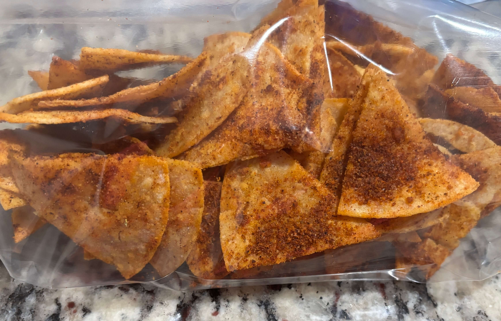

Home
Baked Tortilla Chips

Ingredients
- Paprika
- Chili Powder
- 1 tsp garlic powder
- 1 tsp onion powder
- 1/2 tsp salt
- Stack of thin corn tortillas cut into 6 or 8 triangles
- Neutral oil (avocado or vegetable)
Steps
- In a bowl mix together all the spices and seasonings.
- Preheat the oven to 350 degrees F
- Lightly coat both sides of the triangle tortillas with a neutral oil and season them with the seasoning mix.
- Cook them at 350 degrees F for 10-15 minutes until golden brown, flipping them halfway through. Keep a close eye on them after 10 minutes because they could burn easily
- As soon as they come out of the oven, toss them in a bowl with the remaining seasoning while they are still hot and slightly oily.
- Let them cool completely on a wire rack while they continue to crisp up
Tips
- If your tortillas are a little bit dry/stale or have been sitting in the fridge they bake up crispier than fresh moist ones
- You can also cook them in the air fryer at 350 degrees F for about 5-7 minutes shaking the basket every 2 minutes